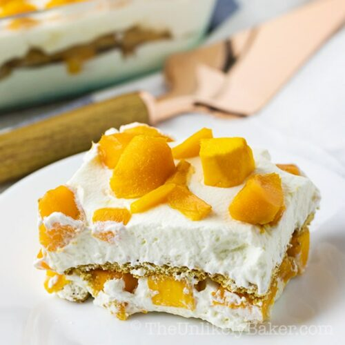

MangoFloat

Description
Mango float or crema de mangga is a Filipino icebox cake dessert made with layers of ladyfingers or graham crackers, whipped cream, condensed milk,
and ripe carabao mangoes. It is chilled for a few hours before serving, though it can also be frozen to give it an ice cream-like consistency.
Ingredients
- 1 tablespoon of crushed graham
- 20 pieces Graham crackers
- 1 cup all purpose cream or coolwhip
- 3/4 cup condensed milk
- 2 cups of mangoes thinly sliced
Steps
- In a rectangular dish, arrange 8 to 10 pieces of graham crackers. Set aside.
- In a bowl, combine the cream/cool whip and condensed milk. (Mix well)
- Then on the layered crackers on the bottom, spread the milk and cream mixture.
- Then spread out the thin sliced mangoes evenly on top of the cream.
- Make another layer of graham crackers; spread the cream and mango slices. (You can do lots of layers if you want)
- Garnish top layer with mango and sprinkle the crushed graham.
- Chill for at least 3 hours before serving.
=